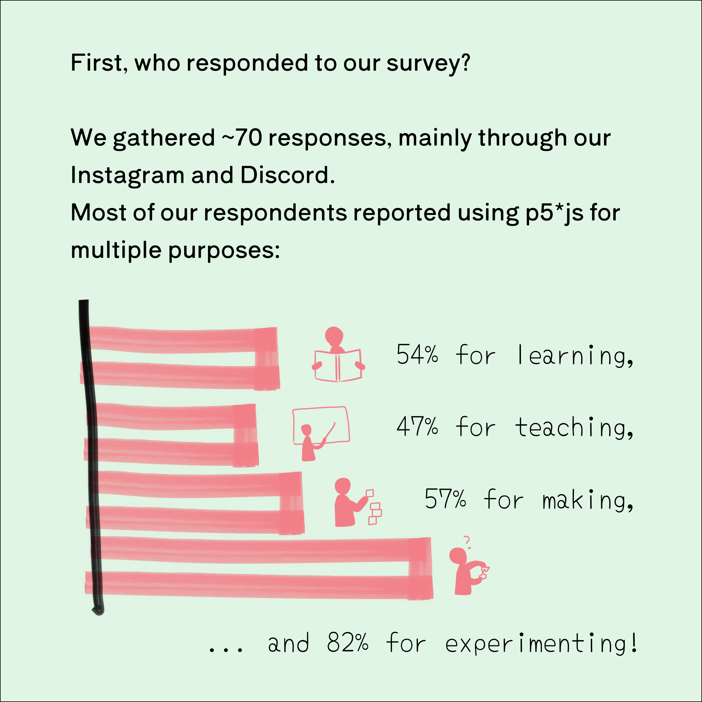
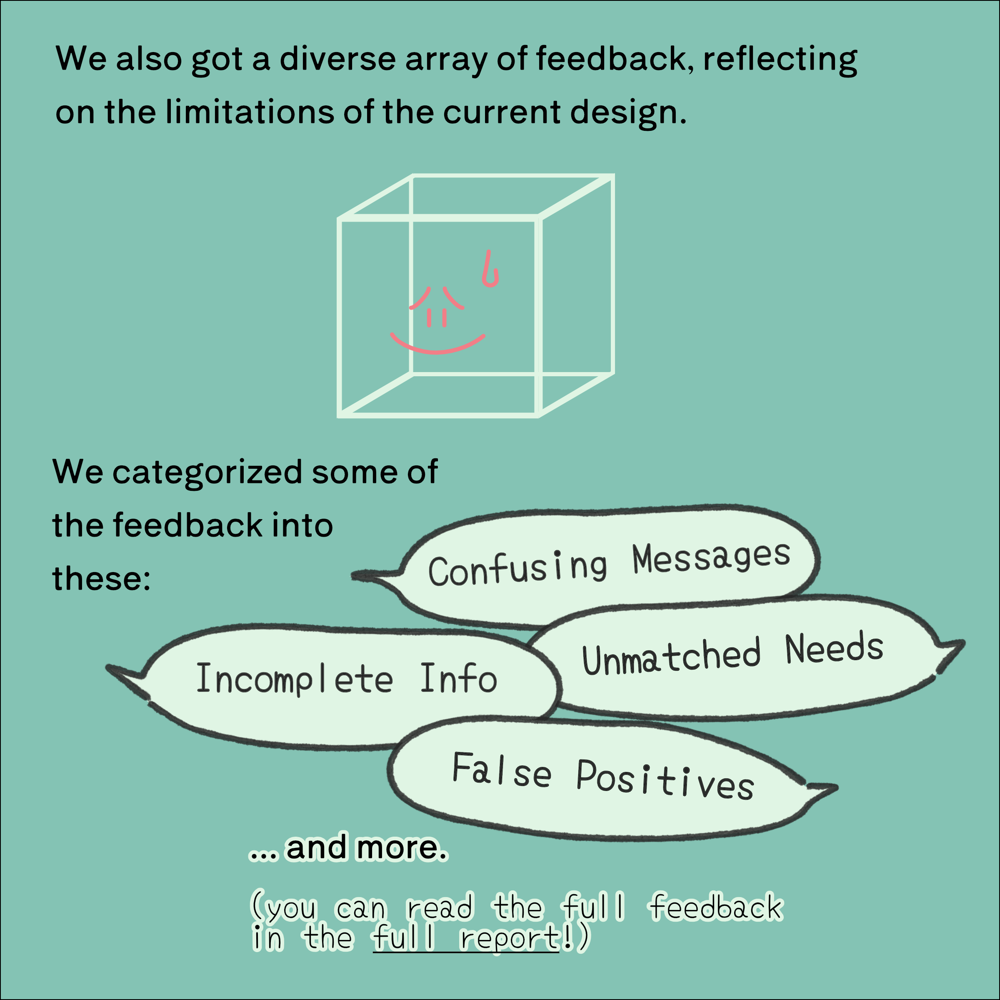

p5*js
☼
FES
✎
Full Report
2022 p5js Friendly Errors System (FES) Survey


To read the full report ⇢
2021-2022 FES Survey: Full Report
To the p5*js project ⇢
p5*js
To read about the beginning of the Friendly Errors project ⇢
Friendly Error System for p5.js